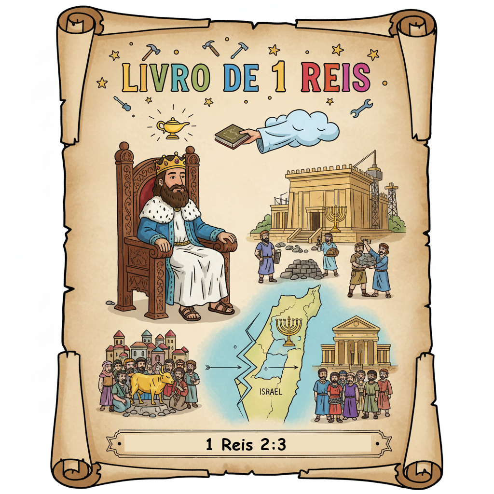
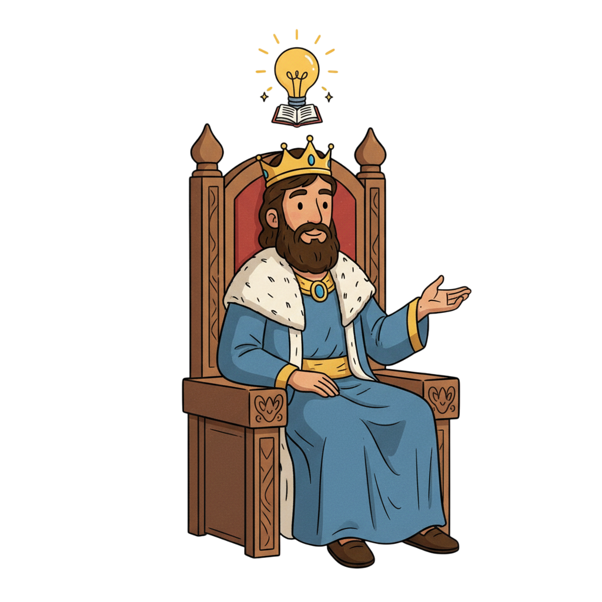
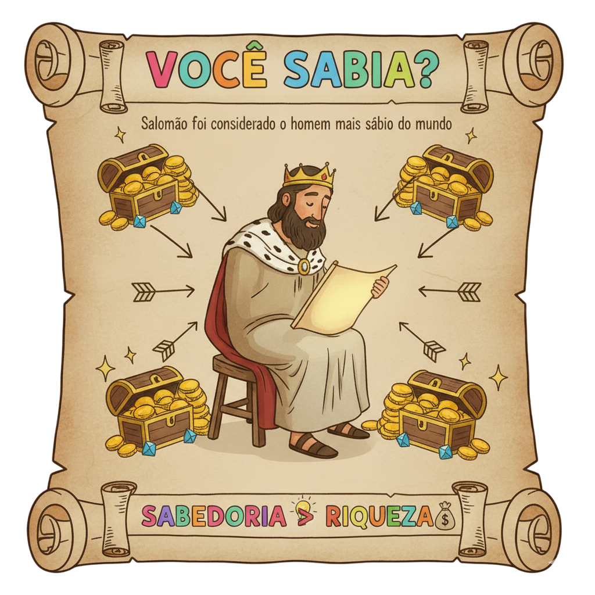

Sabedoria, Templo e o Profeta de Fogo — Um Resumo Visual para Crianças
Quando Deus apareceu em sonho para Salomão e disse "Pede o que quiseres", ele não pediu ouro, fama ou vida longa. Pediu sabedoria para governar o povo com justiça. Deus ficou tão impressionado que deu tudo — sabedoria e riqueza!
O pai Davi sonhou em construir um templo para Deus, mas não pôde. Salomão realizou esse sonho — 7 anos de construção, 153.000 trabalhadores, e as pedras eram cortadas longe para não haver barulho de martelo no monte sagrado!
O profeta Elias desafiou 450 profetas de Baal no Monte Carmelo. Os profetas de Baal gritaram o dia todo — nada. Elias orou uma só vez — e fogo caiu do céu! Deus não precisa de gritos, só de fé!
"Dá ao teu servo um coração que saiba ouvir, para que possa discernir entre o bem e o mal."
— 1 Reis 3:9
Salomão poderia ter pedido qualquer coisa — ouro, poder, a morte dos seus inimigos. Mas pediu sabedoria para ajudar as pessoas. Deus ficou tão feliz com isso que deu tudo! O que você pede quando ora?
Pedir sabedoria é o pedido mais inteligente que existe!
Um coração que ouve Deus vale mais que todo o ouro do mundo!
Quando buscamos primeiro a Deus, Ele cuida de todo o resto!

Filho de Davi, o rei mais rico e sábio do mundo antigo. Construiu o Templo de Jerusalém em 7 anos. Mas no final deixou que suas muitas esposas o afastassem de Deus — a maior sabedoria não o protegeu da maior tolice!
O profeta mais dramático do Antigo Testamento! Desafiou o rei Acabe, chamou seca por 3 anos, orou fogo do céu, fugiu em depressão — e Deus o encontrou no silêncio de uma caverna com pão quentinho e água.
Viajou do extremo sul (atual Etiópia ou Iêmen) para testar a sabedoria de Salomão com perguntas difíceis. Ficou tão impressionada que declarou: "A metade não me foi dita!" Jesus a citou como exemplo de quem busca a sabedoria.
Deus apareceu a Salomão em sonho e ofereceu qualquer coisa. Salomão pediu sabedoria — não riqueza. Deus ficou tão contente que deu riqueza também! Logo depois, Salomão resolveu um caso impossível: duas mães e um bebê — quem é a mãe de verdade?
Salomão levou 7 anos para construir o Templo usando cedros do Líbano, ouro, prata e pedras preciosas. As pedras eram cortadas a distância para não haver barulho de ferro no monte. Na dedicação, a glória de Deus encheu o lugar em forma de nuvem!
Após a morte de Salomão, seu filho Roboão recebeu um aviso: seja mais gentil que seu pai. Ele ignorou os conselheiros velhos e ouviu os jovens inexperientes. Resultado: 10 tribos se revoltaram e formaram o Reino do Norte (Israel). Uma decisão tola partiu o país em dois!
450 profetas de Baal gritaram o dia todo — silêncio. Elias orou uma vez e fogo caiu do céu! Mas logo depois fugiu em pânico para o deserto. Deus o encontrou exausto, preparou pão e água, e sussurrou em voz mansa: "Levanta-te e come, porque a jornada é longa."

🏛️ O Templo foi construído em silêncio!
Todas as pedras do Templo eram cortadas e preparadas longe do monte, para que não se ouvisse nenhum som de martelo ou cinzel no local sagrado (1 Rs 6:7). Era um canteiro de obras silencioso — como a santidade de Deus exigia!
😔 Elias pediu para morrer — e Deus fez café!
Depois da maior vitória da sua vida, Elias entrou em depressão e pediu para Deus tirar sua vida (1 Rs 19:4). Deus não o repreendeu. Preparou um bolo assado e água, e disse: "Levanta-te e come, porque a jornada é muito longa para ti."
✝️ Jesus falou sobre Salomão e a Rainha de Sabá!
Jesus disse: "A rainha do Sul se levantará no juízo com esta geração e a condenará; porque veio dos confins da terra para ouvir a sabedoria de Salomão, e eis aqui maior que Salomão." (Mt 12:42) — Jesus é a sabedoria definitiva!
Se Deus te aparecesse agora e dissesse "Pede o que quiseres", o que você pediria? Será que sua resposta se parece mais com a de Salomão ou com a do que o mundo costuma querer?
Deus não estava no vento forte, nem no terremoto, nem no fogo — mas na voz quieta e delicada. Você consegue ouvir Deus quando a vida está barulhenta? Como você cria silêncio para ouvi-Lo?
Elias teve a maior vitória da sua vida e logo depois caiu em depressão. Por que você acha que isso aconteceu? Já aconteceu com você de sentir que "descarregou" depois de algo grande?
Esta semana, antes de fazer qualquer pedido em oração, pare e pergunte: "Estou pedindo o que eu quero ou o que Deus quer para mim?" Ore pedindo sabedoria primeiro!
Assim como Deus falou com Elias em voz quieta, reserve 5 minutos de silêncio — sem celular, sem TV — e apenas ouça. O que Deus pode estar dizendo para você nesse silêncio?
Leia 1 Reis 18:20-39 — o desafio do Monte Carmelo. Como você descreveria a fé de Elias para um amigo que nunca ouviu essa história?
Trilho Kids | Desenvolvido com ❤️ para crianças © 2025